건축설비기사 (2019-09-21 기출문제)
1과목: 건축일반
1. 개구부의 미관과 벽체와의 접합면에서 마무리를 좋게 하기 위하여 둘러대는 누름대는?
- 연귀
- 문틀
- 문선
- 턱장부
(정답률: 62%)

2. 마룻바닥을 시공할 때 적용되는 쪽매의 종류가 아닌 것은?
- 딴혀쪽매
- 반턱쪽매
- 연귀쪽매
- 제혀쪽매
(정답률: 71%)
3. 다음 초고층 빌딩 중 수직높이상 가장 높은 건물은?
- 엠파이어스테이트 빌딩
- 타이페이 101
- 시워스 타워
- 페트로나스 타워
(정답률: 76%)
4. 병원의 병실계획으로 옳지 않은 것은?
- 환자가 병상에서 외부를 전망할 수 있게 한다.
- 침대방향은 환자의 눈이 창과 직면하지 않도록 한다.
- 천장은 조도가 낮고 반사율이 적은 마감재료를 사용해야 한다.
- 병실 출입구는 안여닫이로 하고 폭은 90cm 이내로 계획한다.
(정답률: 79%)
5. 실내 어느 1점에서 수평면소도를 측정하니 220lx이었다. 옥외 전천공 수평면조도를 20000lx로 할 때 실내 이 점의 주광률을 구하면?
- 1.1%
- 2.1%
- 3.1%
- 4.1%
(정답률: 71%)
6. 호텔의 기능에 따른 소요실의 명칭으로 옳은 것은?
- 관리부분 : 식당, 라운지
- 숙박부분 : 보이실, 린넨실
- 요리부분 : 연회실, 커피숍
- 공공부분 : 배선실, 주방
(정답률: 80%)
7. 건축계획진행과정에 있어서 세부계획에 속하지 않는 것은?
- 자료수집분석
- 평면계획
- 입면계획
- 구조계획
(정답률: 77%)
8. 블록구조의 내력벽에 관한 설명으로 옳지 않은 것은?
- 위층의 연직하중과 건물에 작용하는 수평하중을 받는 중요한 역할을 한다.
- 내력벽이 수평하중을 받으면 전단력과 휨을 동시에 받게 된다.
- 내력벽은 건물의 평면상으로 균형 있게 배치하여야 한다.
- 하중의 흐름을 고려하여 위층의 내력벽은 밑층의 내력벽과 같은 위치에 배치하지 않는다.
(정답률: 74%)
9. 다음 중 기초의 분류 상 직접기초에 속하지 않는 것은?
- 복합기초
- 독립기초
- 온통기초
- 말뚝기초
(정답률: 61%)
10. 다음 중 음의 단위와 관계가 없는 것은?
- cd
- dB
- W/cm2
- phon
(정답률: 65%)
11. 철골구조의 데크플레이트에 사용되는 스터트볼트의 주된 역할은?
- 축력 저항
- 전단력 저항
- 휨모멘트 저항
- 비틀림 저항
(정답률: 73%)
12. 온도, 습도, 기류를 조합하여 인체의 실제 체감(體感)을 표시하는 척도가 되는 것은?
- TAC 온도
- 임계온도
- 절대온도
- 유효온도
(정답률: 76%)
13. 도시 열섬현상의 원인으로 가장 거리가 먼 것은?
- 큰 강을 끼고 도시가 발달되어 있다.
- 건축물과 포장도로가 많다.
- 연료소비에 의한 인공열 및 오염물질의 방출량이 크다.
- 도심부는 고층건물이 많고 요철이 심해서 환기가 어렵다.
(정답률: 77%)
14. 학교건축 계획에 관한 설명으로 옳지 않은 것은?
- 관리부분의 배치는 학생들의 동선을 피하고 중앙에 가까운 위치가 좋다.
- 주차장은 되도록 학교 깊숙이 끌어들이지 않고 한쪽 귀퉁이에 배치하는 것이 바람직하다.
- 배치형식 중 집합형은 일종의 핑거플랜으로 일조 및 통풍 등 교실의 환경조건이 균등하며 구조계획이 간단하다.
- 운영방식 중 달톤형은 학급과 학생 구분을 없애고 학생들은 각자의 능력에 맞게 교과를 선택하며 일정한 교과가 끝나면 졸업한다.
(정답률: 72%)
15. 도서관 서고계획에 관한 설명으로 옳지 않은 것은?
- 도서의 수장보존을 위해 방화, 방습을 고려하여 계획한다.
- 자연 직사광선을 최대한 유입하고, 인공조명을 보조로 활용한다.
- 도의 증가를 고려한 증축이 용이하도록 평면 및 구조적인 면을 고려한다.
- 서고 내 서가의 배열 시 불규칙한 배열은 계획상 손실이 많다.1
(정답률: 83%)
16. 상점의 파사드 구성에서 중요시되는 5가지 광고 요소에 해당되지 않는 것은?
- Media
- attention
- Desire
- Interest
(정답률: 71%)
17. 전통 한식 주택을 양식 주택과 비교한 설명으로 옳지 않은 것은?
- 비교적 개구부가 넓은 편이다.
- 대부분 가구식 구조로 이루어져 있다.
- 지면에서 1층 바닥까지의 높이가 큰 편이다.
- 실이 기능적으로 분화되어 있다.
(정답률: 68%)
18. 사무소 건축에서 층고를 낮추는 이유와 가장 거리가 먼 것은?
- 건축비의 경제적 효과를 위함이다.
- 층수를 많이 얻기 위함이다.
- 실내 공기 조절의 효과를 높이기 위함이다.
- 외관을 보기 좋게 하기 위함이다.
(정답률: 80%)
19. 상점의 평면배치 중 종류별 상품진열이 용이하고 대량판매형식이 가능한 것은?
- 복합 배열형
- 굴절 배열형
- 직선 배열형
- 환상 배열형
(정답률: 73%)
20. 주택의 침실계획에 관한 설명으로 옳지 않은 것은?
- 침대는 머리쪽에 창을 두는 것이 좋다.
- 침실은 현관에서 멀리 떨어진 곳에 배치하는 것이 좋다.
- 출입문은 침대가 직접 보이지 않게 안여닫이로 하는 것이 좋다.
- 어린이 침실은 가사실로부터 감독할 수 있는 위치에 있는 것이 좋다.
(정답률: 77%)
2과목: 위생설비
21. 수도 본관으로부터 높이 10m에 설치된 세정밸브식 대변기의 사용을 위해 필요한 수도본관의 최저압력은? (단, 급수방식은 수도직결방식이며 배관 내의 마찰손실은 40kpa, 세정밸브식 대변기의 최저필요압력은 70kpa이다.)
- 70kpa
- 100kpa
- 140kpa
- 210kpa
(정답률: 61%)
22. 대변기의 세정수의 급수방식 중 로 탱크식에 관한 설명으로 옳지 않은 것은?
- 탱크로의 급수에 볼 탭이 사용된다.
- 하이 탱크식에 비해 세정소음이 작다.
- 탱크로의 급수압력과 관계없이 대변기로의 급수수량이나 압력이 일정하다.
- 단시간에 다량의 물이 필요하기 때문에 일반 가정용으로는 거의 사용되지 않는다.
(정답률: 71%)
23. 액체 중에 직경이 작은 관을 세웠을 때, 관속의 액면이 관 밖의 액면보다 높거나 낮게 되는 현상은?
- 층류 현상
- 난류 현상
- 모세관 현상
- 베르누이 현상
(정답률: 65%)
24. 시간당 200L의 급탕을 필요로 하는 건물에서 전기온수기를 사용하여 급탕을 하는 경우 필요전력은? (단, 물의 비열은 4.2kJ/kgㆍK, 급수온도는 10℃, 급탕온도는 60℃, 전기온수가의 가열효율은 95%이다.)
- 11.1kW
- 11.7kW
- 12.3kW
- 13.5kW
(정답률: 53%)
25. 같은 구경의 강관을 직선으로 연결하고자 할 때 사용되는 강관 이음쇠류가 아닌 것은?
- 부싱
- 소켓
- 니플
- 유니온
(정답률: 60%)
26. 급수압력이 일정하며, 일반적으로 하향급수 배관방식이 사용되는 급수방식은?
- 수도직결방식
- 고가수조방식
- 압력수조방식
- 펌프직송방식
(정답률: 73%)
27. 원심식 펌프로 회전차 추위에 디퓨저인 안내 날개를 갖는 펌프는?
- 마찰 펌프
- 터빈 펌프
- 제트 펌프
- 다이아프램 펌프
(정답률: 79%)
28. 다음과 같은 조건에 연면적 2000m2의 사무소 건물에 필요한 1일당 급수량은?
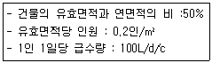
- 10000L/d
- 20000L/d
- 30000L/d
- 40000L/d
(정답률: 75%)
29. 중앙식 급탕방식에 관한 설명으로 옳지 않은 것은?
- 배관 및 기기로부터의 열손실이 작다.
- 기구의 동시이용률을 고려하여 가열장치의 총용량을 적게 할 수 있다.
- 일반적으로 열원장치는 공조설비와 겸용하여 설치되기 때문에 열원단가가 싸다.
- 기계실 등에 다른 설비 기계와 함께 가열장치등이 설치되기 때문에 관리가 용이하다.
(정답률: 72%)
30. BOD 제거율(%) 산정방법을 올바르게 표현한 것은?
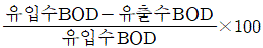
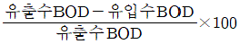
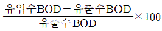
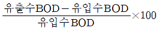
(정답률: 78%)
31. 다음과 같은 조건에서 급탕량이 2000L/h인 저탕조의 가열코일 표면적은?
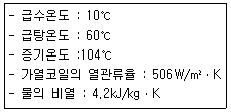
- 약 3.3m2
- 약 6.6m2
- 약 33.4m2
- 약 65.9m2
(정답률: 42%)
32. 물의 정수과정에서 물 속에 있는 철분을 제거하기 위한 처리과정은?
- 혐기
- 폭기
- 불소주입
- 응집제 첨가
(정답률: 66%)
33. 급탕배관의 설계 및 시공에 관한 설명으로 옳지 않은 것은?
- 배관은 균등한 구배를 만든다.
- 중앙식 급탕설비는 원칙적으로 강제순환방식으로 한다.
- 관의 신축을 고려하여 건물의 벽관통부분의 배관에는 슬리브를 사용한다.
- 온도강하 및 급탕수전에서의 온도 불균형을 방지하기 위해 단관식으로 한다.
(정답률: 70%)
34. 펌프의 전양정이 60m이고, 30m3/h의 물을 양수하고자 할 때 요구되는 펌프의 축동력은? (단, 펌프의 효율은 55%)
- 2.7kW
- 4.9kW
- 5.3kW
- 8.9kW
(정답률: 46%)
35. 다음 중 급수설비에서 크로스 커넥션 방지 대책으로 가장 알맞은 것은?
- 설비 내에 버큠 브레이커 및 역류방지 장치를 부착한다.
- 관내 유속을 억제하고, 설비 내에 써지 탱크(surge tank) 및 안전벨트를 설치한다.
- 배관 계통별로 색깔로 구분하여 오접함을 방지하며 통수시험에 의해 체크한다.
- 수평배관에는 공기나 오물이 정체하지 않도록 하며, 어쩔 수 없이 공기 정체나 일어나는 곳에는 공기빼기밸브를 설치한다.
(정답률: 73%)
36. 다음 중 통기관을 설치하는 목적과 가장 거리가 먼 것은?
- 트랩의 봉수를 보호한다.
- 배수관 내의 압력변동을 억제하여 배수의 흐름을 원활하게 한다.
- 배수관 계통의 환기를 도모하여 관내를 청결하게 유지한다.
- 배수관에 해로운 영향을 미칠 물질이 배수관에 들어가지 않도록 한다.
(정답률: 65%)
37. 배수 배관에서 청소구를 원칙적으로 설치하여야 하는 곳이 아닌 것은?
- 배수수평주관의 기점
- 배수수직관의 최상부
- 배수수평수관의 기점
- 배수관이 45°를 넘는 각도에서 방향을 전환하는 개소
(정답률: 77%)
38. 관 내의 흐름이 층류인지 난류인지를 판별하는데 사용되는 레이놀즈수의 산정식으로 옳은 것은? (단, Re=레이놀즈 수, u=관 내의 평균유속(m/s), d=관 내경(m), v=유체의 동점성계수(m2/s))
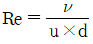
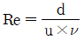
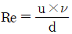
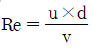
(정답률: 47%)
39. 세정밸브식 대변기에 버큠 브레이커를 설치하는 주된 이유는?
- 냄새 방지
- 급수소음 방지
- 급수오염 방지
- 배관의 부식방지
(정답률: 71%)
40. 다음 중 모세관 현상에 따른 트랩의 봉수파괴를 방지하기 위한 방법으로 가장 알맞은 것은?
- 트랩을 자주 청소한다.
- 각개통기관을 설치한다.
- 관내 압력변동을 작게 한다.
- 기구배수관 관경을 트랩구경보다 크게 한다.
(정답률: 67%)
3과목: 공기조화설비
41. 틈새바람양의 산출 방법에 속하지 않는 것은?
- 환기횟수법
- 창문면적법
- 실내면적법
- 창문틈새길이법
(정답률: 59%)
42. 증기난방 방식에 관한 설명으로 옳지 않은 것은?
- 예열시간이 온수난방에 비해 짧다.
- 온수난방에 비해 실내의 쾌감도가 좋다.
- 온수난방에 비해 한랭지에서 동결의 우려가 적다.
- 온수난방에 비해 부하변동에 따른 실내방열량의 제어가 곤란하다.
(정답률: 68%)
43. 중앙 공조기의 전열교환기에서는 다음 중 어느 공기가 서로 열교환을 하는가?
- 외기와 실내배기
- 외기와 실내급기
- 실내배기와 실내급기
- 환기(RA)와 실내급기
(정답률: 51%)
44. 동일 송풍기에서 회전수를 2배로 했을 경우 풍량, 정압 및 소요동력의 변화량으로 옳은 것은?
- 풍량 2배, 정압 4배, 소요동력 8배
- 풍량 2배, 정압 8배, 소요동력 4배
- 풍량 4배, 정압 4배, 소요동력 8배
- 풍량 4배, 정압 8배, 소요동력 2배
(정답률: 73%)
45. 상대습도 60%인 습공기의 건구온도(a), 습구온도(b), 노점온도(c)의 크기 관계가 옳은 것은?
- a＞b＞c
- b＞a＞c
- b＞c＞a
- c＞b＞a
(정답률: 70%)
46. 다음 설명에 알맞은 환기방식은?
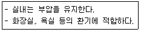
- 급기팬과 배기팬의 조합
- 급기팬과 자연배기의 조합
- 자연급기와 배기팬의 조합
- 자연급기와 자연비기의 조합
(정답률: 74%)
47. 단일덕트 정풍량방식에 관한 설명으로 옳은 것은?
- 변풍량방식에 비해 설비비가 많이 든다.
- 2중덕트방식에 비해 냉ㆍ온풍의 혼합손실이 많다.
- 부하변동에 대한 제어응답이 변풍량방식에 비해 느리다.
- 실내의 열부하 변동에 따라 송풍량을 조절하는 방식이다.
(정답률: 54%)
48. 그림과 같은 조건에서 재실인원이 50명인 회의실의 외기 현열부하는?
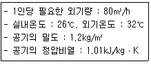
- 6270W
- 7240W
- 8080W
- 9120W
(정답률: 62%)
49. 기준면보다 20m 높이에 있는 관내에 물이 압력 60kpam 유속 3m/s로 흐를 때 이 물의 전수두는? (단, 물의 밀도는 1kg/L이다.)
- 약 18.7m
- 약 26.5m
- 약 38.7m
- 약 83.1m
(정답률: 57%)
50. 건구온도 32℃, 절대습도 0.025kg/kg'인 습공기의 엔탈피는? (단, 건공기 정압비열 1.01kJ/jkgㆍK, 수증기의 정압비열 1.85kJ/kgㆍK, 0℃에서 포화수의 증발잠열 2501kJ/kg)
- 71.21kJ/kg
- 96.33kJ/kg
- 140.62kJ/kg
- 182.52kJ/kg
(정답률: 51%)
51. 다음 중 주방, 공장, 실험실에서와 같이 오염물질의 확산 및 방산을 가능한 한 극소화 시키려고 할 때 적용하는 환기방식은?
- 희석환기
- 국소환기
- 전체환기
- 자연환기
(정답률: 73%)
52. 다음 중 대기오염이 심한 지역에 가장 적합한 냉각탑은?
- 개방식
- 밀페식
- 대기식
- 자연통풍식
(정답률: 77%)
53. 열원에서 각 방열기기까지의 공급관과 환수관의 도달거리의 합을 거의 같게 하여 배관의 마찰저항 값을 유사하게 함으로써 순환온수가 균등하게 흐르도록 한 배관방법은?
- 중력식
- 개방식
- 역환수식
- 진공환수식
(정답률: 74%)
54. 용량이 386kW인 터보 냉동기에 순환되는 냉수량은? (단, 냉각기 입구의 냉수온도 12℃, 출구의 냉수온도 6℃, 물의 비열 4.2kJ/kgㆍK)
- 약 46m3/h
- 약 55m3/h
- 약 231m3/h
- 약 332m3/h
(정답률: 51%)
55. 유리창으로부터의 일사열 취득에 관한 설명으로 옳지 않은 것은?
- 투과율이 클수록 취득열량이 적다.
- 유리의 면적이 클수록 취득열량이 많다.
- 유리의 차폐계수가 클수록 취득열량이 많다.
- 반사유리는 여름철 취득열량을 줄이는 데 유리하다.
(정답률: 61%)
56. 벽면 취출구에서 공기를 수평으로 취출하는 경우, 취출공기의 이동에 관한 설명으로 옳지 않은 것은?
- 강하거리는 취출기류의 풍속에 비례한다.
- 상승거리는 취출기류의 풍속에 비례한다.
- 도달거리는 취출기류의 풍속에 비례한다.
- 강하거리는 취출공기와 실내공기의 온도차에 반비례한다.
(정답률: 63%)
57. 다음 중 증기와 응축수 사이의 온도차를 이용하는 온도조절식 증기트랩에 속하는 것은?
- 드럽 트랩
- 버킷 트랩
- 벨로즈 트랩
- 플로트 트랩
(정답률: 66%)
58. 다음 중 덕트 분기부에 설치하여 풍량을 분배 하는데 사용되는 풍량조절 댐퍼는?
- 루버 댐퍼
- 정풍량 댐퍼
- 스폴릿 댐퍼
- 버터플라이 댐퍼
(정답률: 61%)
59. 공기정화장치에서 포집효율 70%의 필터를 통과한 공기의 먼지농도는 포집효율 85%의 필터를 통과한 공기의 먼지농도의 몇 배인가? (단, 각각의 필터 상류의 먼지 농도는 같다.)
- 0.5배
- 1.2배
- 1.5배
- 2.0배
(정답률: 47%)
60. 습공기에 관한 설명으로 옳지 않은 것은?
- 습공기를 가열할 경우 상대습도는 낮아진다.
- 절대습도가 커질수록 수증기 분압은 커진다.
- 습공기의 비체적은 건구온도가 높을수록 작아진다.
- 건습구 온도차가 클수록 습공기의 상태습도는 낮아진다.
(정답률: 41%)
4과목: 소방 및 전기설비
61. 3[Ω]의 저항과 4[Ω]의 유도성 리액턴스가 직렬로 연결된 교류 회로에서의 역률은 얼마인가?
- 75%
- 60%
- 30%
- 80%
(정답률: 50%)
62. 전기식 자동제어 시스템에 관한 설명으로 옳지 않은 것은?
- 신호처리가 쉽지만 원격조작이 어렵다.
- 기기의 구조가 복잡하여 취급이 불편하다.
- 검출부와 조절부가 하나의 케이스 내에 함께 설치된다.
- 신호전송 및 조작 동력원으로서 상용전원을 직접 사용한다.
(정답률: 55%)
63. 유효전력과 무효전력의 단위와 구분하기 위하여 사용되는 파상전력의 단위는?
- [W]
- [Ah]
- [VA]
- [VAR]
(정답률: 60%)
64. 전기화재에 대한 소화기의 적응 화재별 표시로 옳은 것은?
- A
- B
- C
- K
(정답률: 74%)
65. 3상 Y결선에서 선간전압이 220[V]인 3상 상전압은?
- 127[V]
- 220[V]
- 381[V]
- 440[V]
(정답률: 56%)
66. 50[Ω]의 저항과 100[Ω]의 저항을 병렬로 접속하였을 때 합성저항은?
- 0.03[Ω]
- 17.4[Ω]
- 33.33[Ω]
- 150[Ω]
(정답률: 64%)
67. 자동화재탐지설비의 감지기 중 열감지기에 속하지 않는 것은?
- 광전식 감지기
- 차동식 감지기
- 정온식 감지기
- 보상식 감지기
(정답률: 69%)
68. 접속방식에 따라 분류한 인터폰 설비의 종류에 속하지 않는 것은?
- 모자식
- 복합식
- 상호식
- 교호통화식
(정답률: 64%)
69. 유접점 시퀀스 제어 회로에 관한 설명으로 옳지 않은 것은?
- 동작상태의 확인이 쉽다.
- 전기적 노이즈(외란)에 대하여 안정적이다.
- 기계적 진동에 강하여 개폐부하의 용량이 작다.
- 독립된 다수의 출력회로를 동시에 얻을 수 있다.
(정답률: 49%)
70. 옥외소화전설비에 사용되는 호스의 구경은?
- 45mm
- 55mm
- 60mm
- 65mm
(정답률: 69%)
71. LNG에 관한 설명으로 옳지 않은 것은?
- 주성분은 메탄(CH4)이다.
- LPG에 비해 발열량이 작다.
- 천연가스를 냉각하여 액화한 것이다.
- 상온에서 공기보다 비중이 크므로 인화폭발의 우려가 있다.
(정답률: 65%)
72. 건축설비에서 사용되는 농형 유도전동기에 관한 설명으로 옳지 않은 것은?
- 슬립량이 있기 때문에 불꽃의 염려가 없다.
- 속도제어 방법으로 VVVF방식 등을 사용할 수 있다.
- 권선형 유도전동기에 비하여 구조가 단단하여 취급이 용이하다.
- 기동정류가 커서 전동기 권선을 과열시키거나 전원전압의 변동을 일으킬 수 있다.
(정답률: 54%)
73. 다음 중 변압기의 원리와 가장 관계가 깊은 것은?
- 정전유도
- 전자유도
- 발열작용
- 전계유도
(정답률: 62%)
74. 옥내소화전이 1층에 5개, 2층에 4개, 3층에 4개가 설치되어 있을 때 이 건물의 옥내소화전 설비으 수원의 저수량은 최소 얼마 이상이 되도록 하여야 하는가?(2021년 04월 01일 개정된 규정 적용됨)
- 3.4m3
- 5.2m3
- 10.4m3
- 20.8m3
(정답률: 55%)
75. 교류의 크기를 나타내는데 있어서 평균치 Va와 최대치 Vm과의 관계식으로 옳은 것은?
- Va=1.11×Vm
- Va=0.707×Vm
- Va=0.637×Vm
- Va=√2×Vm
(정답률: 49%)
76. 제연설비의 설치장소는 제연구역으로 구획하여야 한다. 제연구역에 관한 설명으로 옳지 않은 것은?
- 거실과 통로(복도 포함)는 상호 제연구획한다.
- 하나의 제연구역의 면적은 1000m2 이내로 한다.
- 하나의 제연구역은 직경 80m의 원내에 들어 갈 수 있도록 한다.
- 통로(복도 포함)상의 제연구역은 보행중심선의 길이가 60m를 초과하지 않도록 한다.
(정답률: 51%)
77. 길이 20[m], 폭 20[m], 천장높이 5[m], 조명률 50[%]의 사무실에 40[W] 형광등을 설치하여 평균 조도를 120[lx]로 하려고 한다. 형광등의 소요 개수는? (단, 형광등 1개의 광속은 2500[lm], 보수율은 80[%]이다.)
- 43개
- 45개
- 48개
- 50개
(정답률: 53%)
78. 건축화 조명방식에 속하지 않는 것은?
- 코브 조명
- 코니스 조명
- 광천장 조명
- 펜던트 조명
(정답률: 70%)
79. 분전반을 설치하는 전기샤프트(ES)에 관한 설명으로 옳지 않은 것은?
- 각 층마다 같은 위치에 설치한다.
- ES의 면적은 보, 기둥 부분을 제외하고 산정한다.
- 설치장비 공급의 편리성을 우선하여 각 층의 모서리 부분에 설치한다.
- 전력용과 정보통신용과 같이 용도별로 구분하여 설치하되, 작은 규모일 경우는 공용으로 사용한다.
(정답률: 64%)
80. 어떤 저항에 직류전압 100[v]를 가했더니 1[kW]의 전력을 소비하였다. 이 때 흐른 전류는 몇 [A]인가?
- 0.01
- 5
- 10
- 100
(정답률: 63%)
5과목: 건축설비관계법규
81. 건축물을 특별시나 광역시에 건축하려는 경우 특별시장이나 광역시장의 허가를 받아야 하는 건축물의 층수 기준은?
- 15층 이상
- 21층 이상
- 31층 이상
- 41층 이상
(정답률: 72%)
82. 다음의 소방시설 중 경보설비에 속하지 않는 것은?
- 유도등
- 비상방송설비
- 자동화재속보설비
- 자동화재탐지설비
(정답률: 62%)
83. 다음은 지하층과 피난층 사이의 개방공간 설치에 관한 기준 내용이다. ()안에 알맞은 것은?
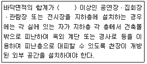
- 1000m2
- 2000m2
- 3000m2
- 4000m2
(정답률: 62%)
84. 욕실 또는 조리장의 바닥과 그 바닥으로부터 높이 1m까지의 안벽의 마감을 내수재료로 하여야 하는 대상에 속하지 않는 것은?
- 숙박시설의 욕실
- 공동주택의 욕실
- 제1종 근린생활시설 중 목욕장의 욕실
- 제1종 근린생활시설 중 휴게음식점의 조리장
(정답률: 59%)
85. 건축물의 에너지절약설계기준에 따른 건축 부문의 권장사항으로 옳지 않은 것은?
- 공동주택은 인동간격을 넓게 하여 저층부의 일사 수열량을 증대시킨다.
- 건물의 창 및 문은 가능한 작게 설계하고, 특히 열손실이 많은 북측 거실의 창 및 문의 면적은 최소화한다.
- 건축물의 체적에 대한 외피면적의 비 또는 연면적에 대한 외피면적의 비는 가능한 크게 한다.
- 거실의 층고 및 반자 높이는 실의 용도와 기능에 지장을 주지 않는 범위 내에서 가능한 낮게 한다.
(정답률: 69%)
86. 건축법령상 다음과 같이 정의되는 주택의 종류는?
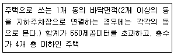
- 다중주택
- 연립주택
- 다세대주택
- 다가구주택
(정답률: 56%)
87. 장례식장의 집회실로서 그 바닥면적이 200m2이상인 경우 반자의 높이는 최소 얼마 이상 이어야 하는가? (단, 기계환기장치를 설치하지 않은 경우)
- 2.1m
- 2.7m
- 3.5m
- 4m
(정답률: 63%)
88. 6층 이상의 거실면적의 합계가 3000m2인 경우, 승용승강기를 최소 2대 이상 설치하여야 하는 건축물은? (단, 8인승 승강기의 경우)
- 숙박시설
- 판매시설
- 업무시설
- 교육연구시설
(정답률: 59%)
89. 100세대 이상의 공동주택 신축 시 시간당 최소 얼마 이상의 환기가 이루어질 수 있도록 자연 환기설비 또는 기계환기설비를 설치하여야 하는가?
- 0.5회
- 1.2회
- 1.5회
- 1.8회
(정답률: 72%)
90. 다음 중 다중이용 건축물에 속하지 않는 것은? (단, 층수가 15층이며 해당 용도로 쓰는 바닥면적의 합계가 5000m2인 건축물의 경우)
- 종교시설
- 판매시설
- 업무시설
- 숙박시설 중 관광숙박시설
(정답률: 70%)
91. 건축법령상 방송 공동수신설비를 설치하여야 하는 대상 건축물에 속하는 것은?
- 수련시설
- 공동주택
- 노유자시설
- 문화 및 집회시설
(정답률: 65%)
92. 다음은 특정소방대상물의 소방시설 설치의 면제기준 내용이다. ()안에 알맞은 것은?
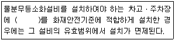
- 연결살수설비
- 옥외소화전설비
- 옥내소화전설비
- 스프링클러설비
(정답률: 59%)
93. 건축물의 관람실 또는 집회실로부터 바깥쪽으로의 출구로 쓰이는 문을 안여닫이로 해도 되는 건축물의 용도는?
- 장례시설
- 위락시설
- 종교시설
- 문화 및 집회시설 중 전시장
(정답률: 57%)
94. 옥외소화전설비를 설치하여야 하는 특정소방대상물의 바닥면적 기준은? (단, 아파트등 위험물 저장 및 처리 시설 중 가스시설, 지하구 또는 지하가 중 터널은 제외)
- 지상 1층 및 2층의 바닥면적의 합계가 1000m2 이상인 것
- 지상 1층 및 2층의 바닥면적의 합계가 3000m2 이상인 것
- 지상 1층 및 2층의 바닥면적의 합계가 6000m2 이상인 것
- 지상 1층 및 2층의 바닥면적의 합계가 9000m2 이상인 것
(정답률: 42%)
95. 다음은 건축물의 에너지절약설계기준에 따른 설계용 실내온도 조건에 관한 기준 내용이다. ()안에 알맞은 것은?
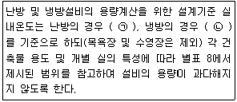
- ㉠ 18℃, ㉡ 25℃
- ㉠ 18℃, ㉡ 28℃
- ㉠ 20℃, ㉡ 25℃
- ㉠ 20℃, ㉡ 28℃
(정답률: 60%)
96. 문화 및 집회시설 중 공연장의 개별관람실의 바닥면적이 1500m2인 경우, 이 관람실에 설치하여야 하는 출구의 최소 개수는? (단, 각 출구의 유효너비는 3m이다.)
- 2개소
- 3개소
- 4개소
- 5개소
(정답률: 53%)
97. 가구수가 20가구인 주거용 건축물에서 음용수용 급수관의 최소 지름은?
- 25mm
- 32mm
- 40mm
- 50mm
(정답률: 54%)
98. 건축물에 급수, 배수, 환기, 난방 등의 건축설비를 설치하는 경우 건축기계설비기술사 또는 공조냉동기계기술사의 협력을 받아야 하는 대상 건축물의 연면적 기준은? (단, 창고시설은 제외)
- 연면적 5000m2 이상인 건축물
- 연면적 10000m2 이상인 건축물
- 연면적 20000m2 이상인 건축물
- 연면적 50000m2 이상인 건축물
(정답률: 63%)
99. 다음 중 건축법령상 제2종 근린생활시설에 속하지 않는 것은?
- 한의원
- 독서실
- 동물병원
- 일반음식점
(정답률: 55%)
100. 비상경보설비를 설치하여야 하는 특정소방대상물의 연면적 기준은? (단, 특정소방대상물이 판매시설인 경우)
- 400m2 이상
- 600m2 이상
- 1500m2 이상
- 3500m2 이상
(정답률: 42%)